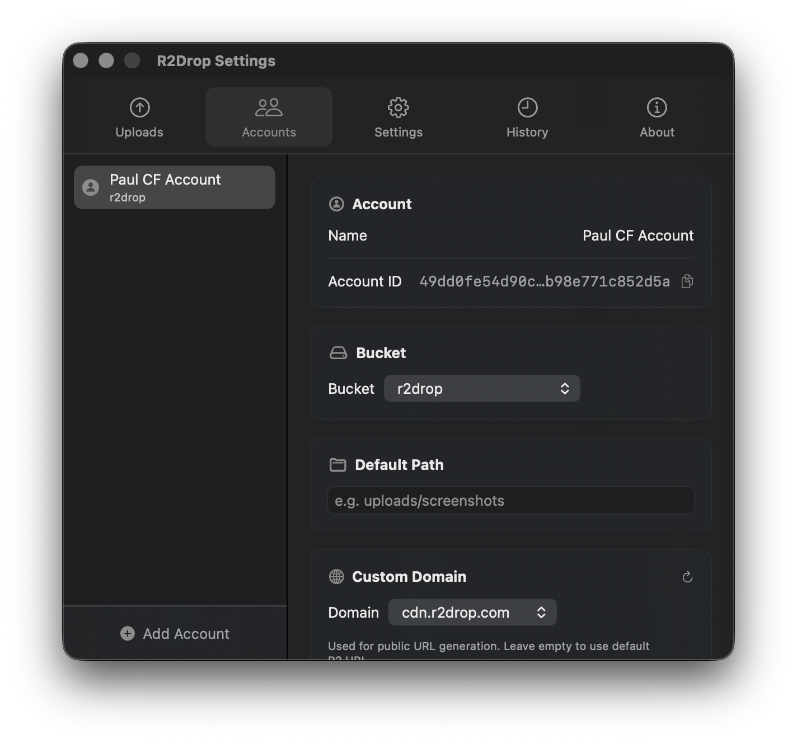
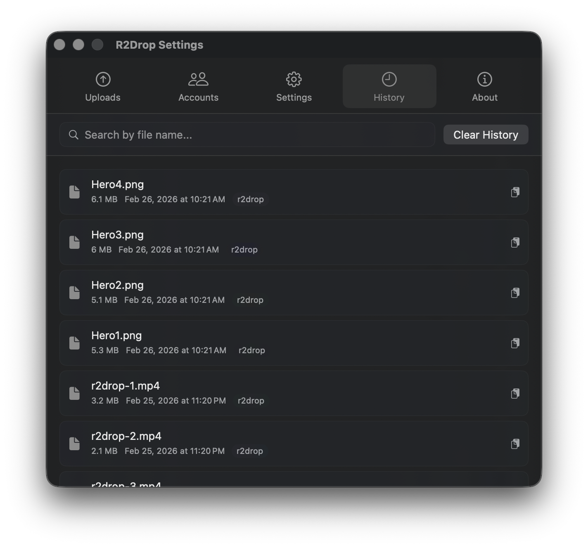

R2Drop is the first native macOS menu bar app built specifically for Cloudflare R2 uploads. If you've spent time navigating the Cloudflare dashboard just to upload a file, R2Drop eliminates that entirely. This guide walks you through installing R2Drop and completing your first upload to Cloudflare R2 in under 60 seconds.
What is R2Drop?
R2Drop is a native macOS application that lives in your menu bar. It integrates with macOS Finder through a right-click context menu extension, so you can upload any file or folder to your Cloudflare R2 bucket directly from Finder — no browser required. Under the hood, R2Drop uses a Rust-powered upload engine that supports multipart uploads, parallel transfers, and resumable sessions for large files.
R2Drop is free, open source under the MIT license, and stores your Cloudflare API credentials exclusively in the macOS Keychain. Your files go directly from your Mac to your R2 bucket — they never touch R2Drop's servers.
Prerequisites
Before installing R2Drop, make sure you have the following:
- A Mac running macOS 13 Ventura or later
- A Cloudflare account with at least one R2 bucket created
- A Cloudflare R2 API token with Object Read & Write permissions (you can create one at dash.cloudflare.com → R2 → Manage R2 API Tokens)
Step 1: Install R2Drop
There are two ways to install R2Drop on your Mac:
Option A: Download the .dmg (Recommended)
Visit the R2Drop GitHub Releases page and download the latest .dmg file. Open it, drag R2Drop to your Applications folder, then double-click to launch. macOS may ask for permission to open an app from an identified developer — click Open to proceed.
Option B: Install via Homebrew
If you prefer Homebrew, run the following commands in your terminal:
brew tap superhumancorp/tap
brew install --cask r2dropHomebrew will download, verify, and install R2Drop automatically.
Step 2: Launch R2Drop and Configure Your First Account
After installing, launch R2Drop from your Applications folder or Spotlight. You'll see the R2Drop icon appear in your macOS menu bar. Click it to open the setup panel.
Click Add Account and fill in the following details:
- Account Name — a friendly label (e.g., "Personal R2" or "Work Bucket")
- Access Key ID — from your Cloudflare R2 API token
- Secret Access Key — from your Cloudflare R2 API token
- Bucket Name — the name of your R2 bucket
- Endpoint URL — found in your Cloudflare R2 dashboard (format:
https://<account-id>.r2.cloudflarestorage.com)
Optionally, set a custom domain if your R2 bucket is connected to a Cloudflare custom domain. This means uploaded files will get shareable links using your own domain.
Click Save. R2Drop stores your credentials securely in the macOS Keychain — they are never written to disk or sent to any server.

Step 3: Upload Your First File
With your account configured, uploading to Cloudflare R2 is as simple as:
- Open Finder and navigate to any file or folder you want to upload
- Right-click (or Control-click) the file
- Select “Send to R2” from the context menu
- R2Drop uploads the file in the background and copies the shareable URL to your clipboard
That's it. Within seconds, your file is live on Cloudflare R2 and the link is ready to paste. No browser tabs, no dashboard navigation, no manual copy-pasting of URLs.
Step 4: Monitor Upload Progress
Click the R2Drop menu bar icon at any time to see active uploads, their progress, and a log of recently uploaded files. Each entry shows the filename, upload time, size, and the public URL. You can click any URL in the history to copy it to your clipboard again.

For large files, R2Drop automatically switches to multipart upload mode, splitting the file into parallel chunks for maximum speed. Uploads are also resumable — if your connection drops, R2Drop picks up where it left off.
What's Next?
Now that you've completed your first Cloudflare R2 upload with R2Drop, here are some things to explore:
- Set up multiple Cloudflare accounts — useful if you manage R2 buckets for multiple projects or clients
- Use the R2Drop CLI — for terminal uploads, shell scripts, and CI/CD pipelines
- Configure path prefixes in the account settings to organize uploads into folders automatically